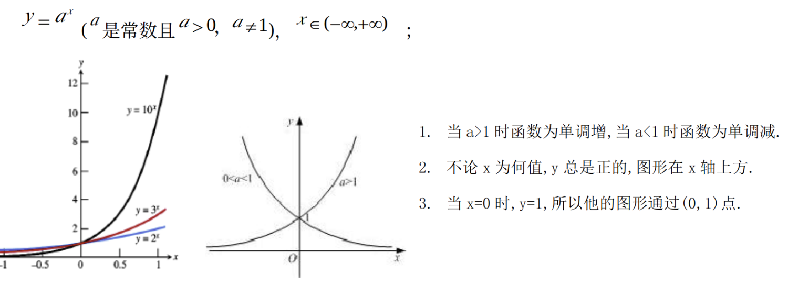
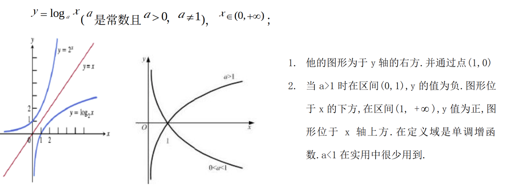

函数¶
指数函数¶

基本性质
\(y = a^x, a>0且a≠1\), 其中 \(a\) 为底数常数，\(x\) 为指数变量。
- 定义域： \((-\infty, \infty) 即\quad\mathbb{R}\) 或 \(\mathbb{C}\)，值域： \((0, \infty)\)
- 单调性： a > 1 时，指数函数单调递增；a < 1 时，指数函数单调递减；a = 1 时，指数函数恒为 1。
- 特殊性：恒过点\((0,1),即 有= a^0 = 1\)。
运算性质
- \(a^{x+y} = a^x \cdot a^y\)
- \(a^{x-y} = \frac{a^x}{a^y}\)
- \((a^x)^y = a^{xy}\)
- \(a^{-1} = \frac{1}{a^x}\)
- \(a^1 = a \quad a^0 = 1\)
- \(a^x = e^{x\log_a(a)}\)
- 求导：\(f(x) = a^x \quad f'(x) = a^x \ln(a),其中\ln(a)为以为e为底a的对数\)
对数函数¶

基本性质
- 定义域 \(x \in (0, \infty)\), 值域：\(y \in (-\infty, \infty)\)
- 单调性：\(a > 1 \quad y\) 单调递增, \(0< a < 1 \quad y\) 单调递减
- 特殊点: \(y = \log_a(x)\) 恒过点\((1,0)\),即 \(\log_a(1) = 0\)
运算性质
- \(\log_a(xy) = \log_a(x) + \log_a(y)\)
- \(\log_a(\frac{x}{y}) = \log_a(x) - \log_a(y)\)
- \(\log_a(x^n) = n\log_a(x)\)
- \(\log_a(\frac{1}{x}) = \log_ax^{-1} = -\log_a(x)\)
- \(\log_a(e^x) = x \quad a = e\)
- \(\log_a(a^x) = x \quad \log_a(1) = 0 \quad \log_a(a) = 1\)
- 换底部：\(\log_a(x) = \frac{\log_b(x)}{\log_b(a)}\)
- 求导：\(f(x) = \log_a(x) \quad f'(x) = \frac{1}{x\ln(a)},其中\ln(a)为以为e为底a的对数\)
正太分布函数¶
随机变量\(X\)服从均值为 \(\mu\)、标准差为\(\sigma\) 的正太分布，即 \(X \sim N(\mu, \sigma^2 )\), 则
\[
f(x) = \dfrac{1}{\sigma \sqrt{2\pi } } e^{- \dfrac{(x-\mu )^2}{2\sigma ^2} }
\]
概率¶
\(P(a,b) = P(a) \cdot P(b)\)